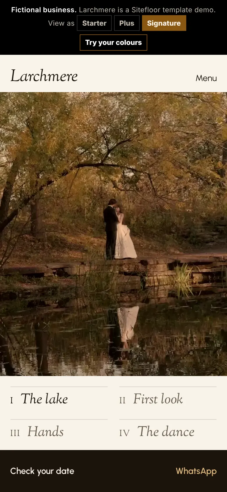
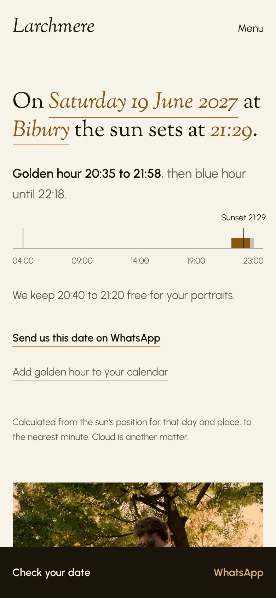
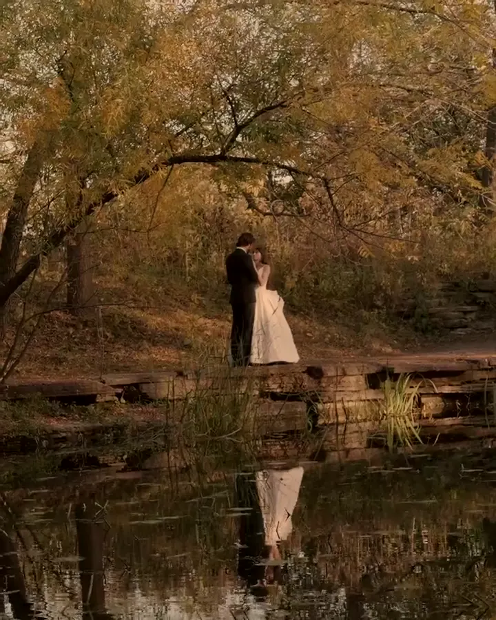

DaylightStarter
£99 then £25 a month
- The home page and Plan your visit
- The film, edge to edge
- Packages and prices
- When the trailer and film arrive
Larchmere · a wedding film studio
Their website, read the way they shoot: by the height of the sun, from the afternoon to the last light. That line above is worked out for Bibury, now.

The film
The home page opens on the studio's film, edge to edge, with its chapters beneath it. Tap one and the film goes there. Below it, the two questions every couple asks first: is our date free, and what's the light that evening?
Starter the film, packages and delivery times · Signature the chapters
Your date
The studio keeps its diary in a Google Sheet. A couple picks a date and the page answers from it, with that evening's sunset, then sends the date and venue on WhatsApp. If the sheet hasn't been touched for two days, it stops answering and asks them to send the date instead.
Plus the date check, with the sunset

Golden hour
A couple picks a date and a place. The page works out that evening's golden hour to the minute, keeps forty minutes of it for their portraits, and puts it in their calendar.
Signature the light planner · Plus the sunset on the date check
The day
The couple types their ceremony time. The page lays out the day from the studio's own timings, and puts the portraits in that evening's golden hour. In December, when the light goes before the vows are done, it says so and moves them.
Signature the day planner, with a calendar file and a WhatsApp copy
Your film
After the wedding, a code in the studio's message opens where their film is: footage in, the edit, colour, sound, delivered, and when the trailer and photographs are due. The studio changes one cell in a sheet.
Signature your film
The plans
Every plan has the film first, a page that loads quickly on a phone, and no running costs beyond hosting and the domain. Twelve months to start.
£99 then £25 a month
£199 then £30 a month
£349 then £35 a month
Lighthouse 12, mobile, on the Larchmere demo. The film itself starts only once the page has loaded, and never for visitors who ask for less motion.
Send us one of your films and your packages, and we'll make a free mockup of your home page with your own work on it.
hello@sitefloor.com